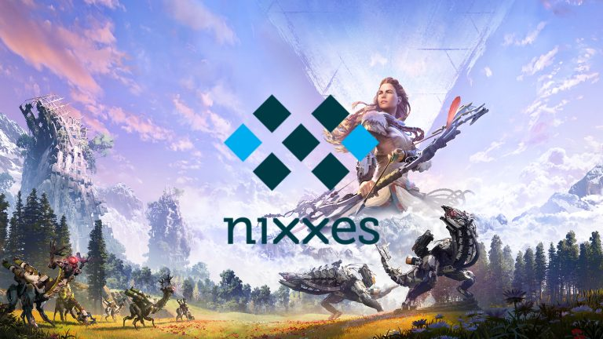

God of War Greek Era Remasters: What We Know So Far
According to new reports, Santa Monica Studio is currently working on remastered versions of the Greek era of the beloved God of War series. These remasters will likely include several games from the Greek saga, bringing long-time fans back to the pre-Norse adventures of Kratos.
Some of the standout titles expected in this collection include God of War: Ascension. Rumors suggest that these remasters will be announced in March 2025, with Nixxes, known for its successful PlayStation-to-PC ports, leading the project.
Remasters for PlayStation 5 and PC
The Greek era remasters will reportedly launch on both PlayStation 5 and PC, marking the first time these classic games will be available for PC players. The remasters are expected to feature modern technologies like ray tracing, updated textures, and higher frame rates, providing gamers with a visually stunning experience.
Two Additional Titles Included
According to leaked information, two lesser-known titles from the series will also be part of the remastered collection: God of War: Chains of Olympus and God of War: Ghost of Sparta, both originally released on the PSP. These games were well-received by critics and fans alike, exploring the backstory of Kratos and filling in the narrative gaps between the main titles.
The remastered versions of these games are expected to see significant graphical and performance upgrades, particularly since the PSP versions were limited by the handheld console’s hardware. Fans can expect a much-improved experience with these remasters.
Potential Collaboration Between Nixxes and Santa Monica
Nixxes, renowned for its skill in porting PlayStation games to PC, is expected to play a significant role in this project. The studio previously worked on high-profile titles like Marvel’s Spider-Man and Horizon Zero Dawn, which received widespread praise for their PC ports. With Nixxes' involvement, this remaster promises to be a seamless experience in terms of both technical and graphical quality.
The remasters may also take advantage of PlayStation 5’s advanced features, such as DualSense support, 3D Audio, and fast loading times, offering players an immersive and realistic journey into the mythological world of ancient Greece. The latest technologies will allow Santa Monica and Nixxes to elevate these classic games to modern standards.
March 2025 Announcement
Rumors suggest that the remastered Greek era of God of War will be officially announced in March 2025. This timing makes sense, as it coincides with the 20th anniversary of the first God of War game, which was released on PlayStation 2 in March 2005. Celebrating this milestone with remasters of the classic series would appeal to both veteran fans and new players.
While there has been no official confirmation from Santa Monica Studio or Nixxes, reports indicate that the project is currently in development, and more details will likely surface in the coming months. If these reports are accurate, God of War fans can look forward to Kratos' return to his Greek roots in 2025.